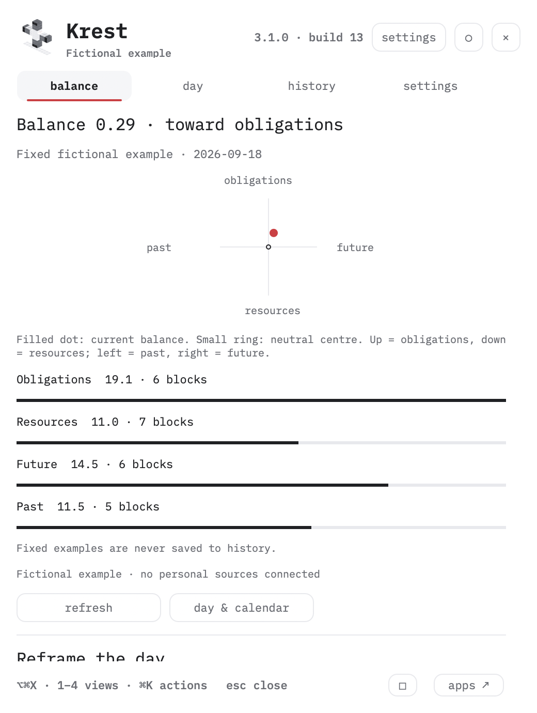
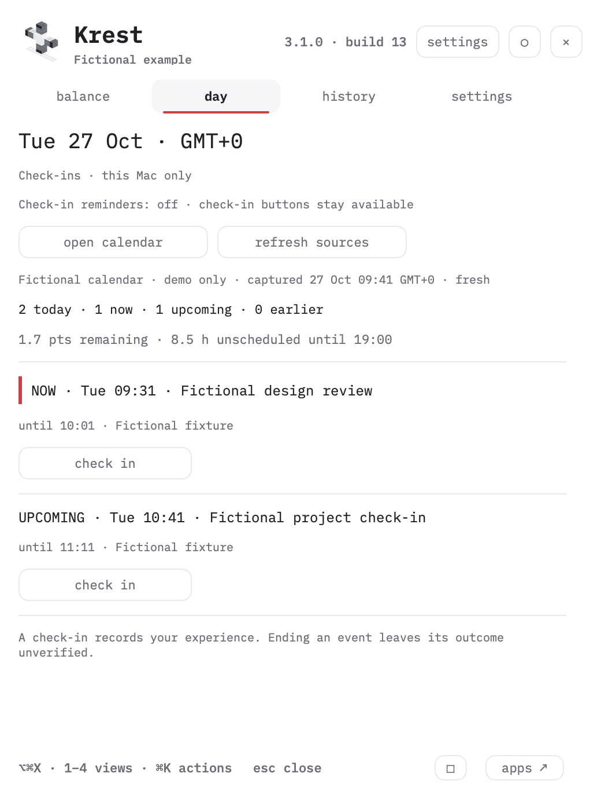
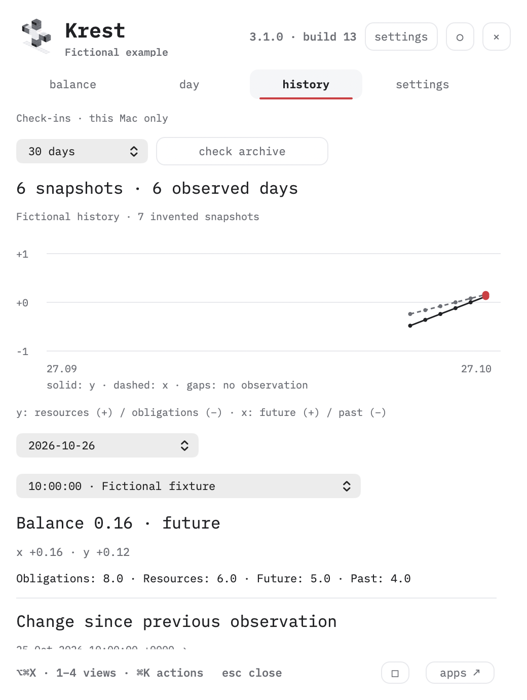
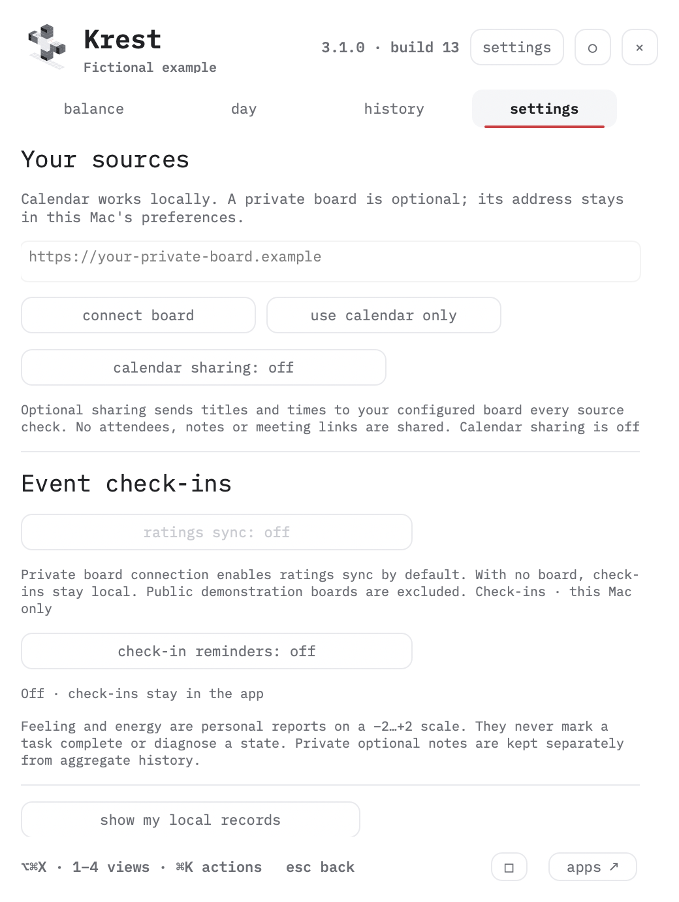

03 · YOUR RULES
configure your cross.
Move a source weight and watch the same cross engine respond on a fictional day. All calculations stay in this browser.
take your cross with you.
view exported rules
A copied link contains these settings. Keep private event titles and credentials out of labels. Your agent follows the repository protocol; Mac installation, bot delivery and schedules need your consent.
read the agent setup protocol →see the Mac app




manual setup & customization
SOURCE + SETUP · MAC + WORKSPACE 3.1
start small.
make it yours.
Use the Mac app with a local calendar. Add a private board when you want your own workspace. Customize declared rules and data adapters from source.
01 · build the Mac app
Requires Apple silicon, macOS 13+ and Apple's Command Line Tools. Inspect the source before building.
git clone https://github.com/ai-mindset-org/toxic-cross.git
cd toxic-cross/native
make test
make installThe installer backs up this app, its preferences and local records. It installs in your Applications folder and uses one login LaunchAgent.
02 · choose your calendar
Krest reads Calendar Control's local snapshot and honors its hidden-calendar choices. Capture time and coverage remain visible. Spark-backed snapshots expire after two minutes; other complete exports expire after one hour.
Without that file, Krest can use macOS Calendar with permission. Events are read-only. Check-in reminders ask for notification permission separately and are off by default.
03 · run your own board
cd toxic-cross
python3 собрать.py
KREST_PORT=8777 python3 server.pyOpen http://127.0.0.1:8777/. Example data is fictional. For your own data, create ignored *.local.json files as described in the repository. Keep the server on loopback. Remote use requires an explicitly configured authenticated private network and TLS.
04 · connect the two
In Krest → Settings, enter your private board address. Calendar-only mode remains available. Enable calendar sharing only if you want selected event titles and times to travel to that board. Attendees, descriptions and meeting links are excluded.
The board accepts the snapshot and updates the calendar lane without starting a model or a new scheduler. Stale or incomplete calendars produce an unknown reading and never invent free time.
Ratings sync uses the same private board and is a separate setting. It exchanges occurrence fingerprints, event times, feeling/energy ratings and your optional note. Newer edits win; offline records remain on the Mac until acknowledged. Look for the sync receipt in Day or History, and use original cross to open the wide view. The public demo never joins this journal.
A check-in updates your recorded feeling, energy and note. These appear in Day and the journal after sync; they do not change source weights or calendar events. The calendar lane updates through calendar sharing. Read the data flow and identity rules ↗.
05 · investigate and customize
Overview joins the day, available confirmed plan and source context. Cross keeps the original field; Timeline has Day, Week and Longer horizons; Changes shows incoming revisions and reversible hides. Hover or focus a block or the dot for details. Source colours and Monochrome keep written labels. The layout fits smaller screens, with Cross, Time and Process views. Select a direction for its records and timeline; select a block to open its weight calculation in a drawer. Search and optional source/scope filters narrow the field. Every main entry URL opens the current workspace directly. The historical instrument is an explicit archive under /classic. Change source weights, scope and written prompts in правила.json. Add read-only data adapters using the provided template. Native check-in wording and notification policy are in native/swift/EventReview.swift. Run tests before installing a changed build.
update, export & uninstall
Updates are manual and tied to a GitHub release. Read the changes and verify the hash before replacing the app. Source installation creates a scoped rollback copy. Use make uninstall to remove this app and its LaunchAgent; history and check-ins are retained.
The browser workspace exports check-ins as JSON. Mac records live in ~/Library/Application Support/Krest/. Aggregate history contains no event titles. The separate check-in file contains your ratings and any private sentence you entered.